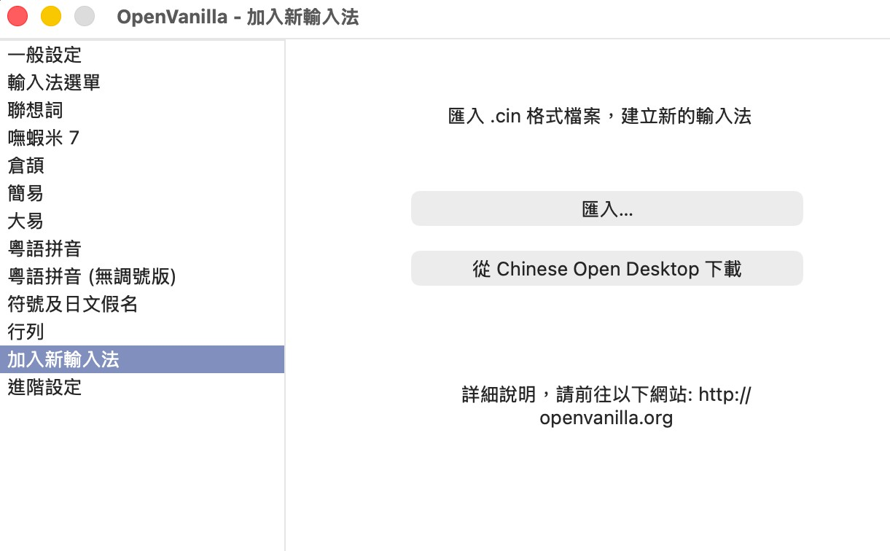
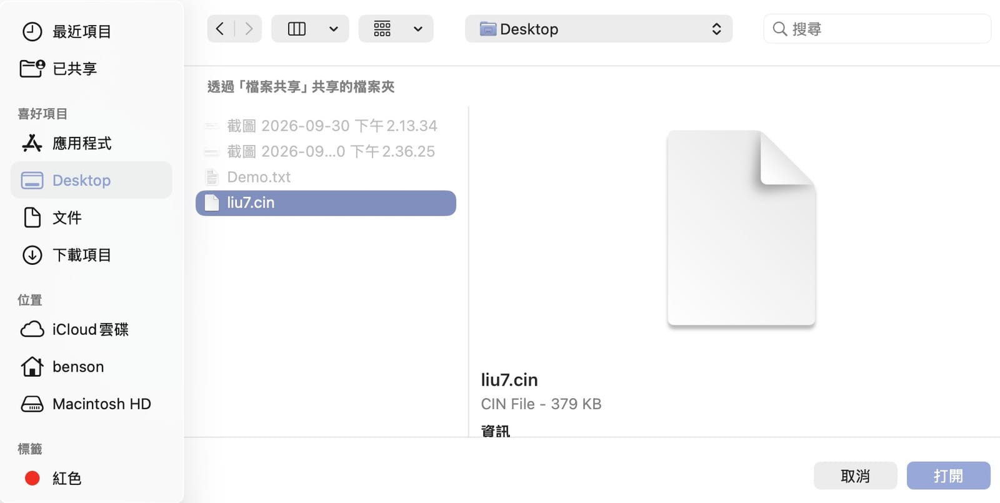
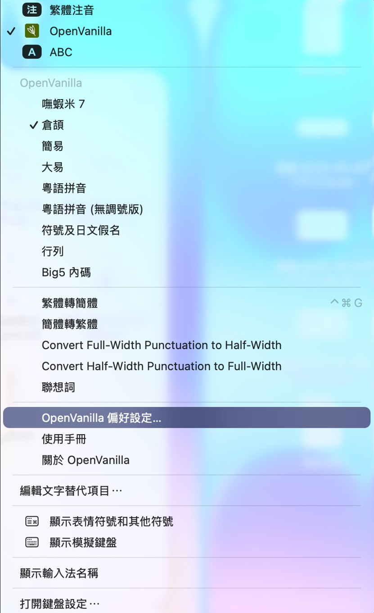

從 Windows 跳槽到 Mac 的人，十個有八個會卡在同一件事：嘸蝦米輸入法。用了十幾二十年的拆碼肌肉記憶，換到 macOS 突然沒得打，比什麼都不習慣。好消息是，有一套免費又長期維護的開源輸入法框架 OpenVanilla，可以讓你在 Mac 上繼續用嘸蝦米（以及倉頡、大易、行列等表格輸入法）。
這篇從頭到尾走一遍：安裝 OpenVanilla、把它加進系統輸入法、匯入嘸蝦米碼表、設好切換快速鍵，最後把「裝了卻看不到」「選了卻打不出字」這些常見卡關也一次講清楚。
先說清楚：OpenVanilla 和「嘸蝦米碼表」是兩回事
這點一定要先搞懂，不然後面會一頭霧水：
- OpenVanilla 是「輸入法引擎／外殼」，免費、開源，負責處理你打的字根、顯示選字視窗。它本身是個空殼，不內含任何一套中文的字根對應。
- 嘸蝦米碼表（.cin 檔） 才是「字根 → 字」的對應表，也就是嘸蝦米的靈魂。OpenVanilla 要靠你餵給它一份碼表，才知道「你打這幾個鍵要出哪個字」。
換句話說，OpenVanilla 幫你把嘸蝦米「跑起來」，但碼表要另外準備。
關於版權：嘸蝦米是行易公司的商業付費輸入法，碼表受版權保護。合法的做法是向行易購買授權、使用你有權使用的碼表檔。這篇教的是「如何把你合法取得的碼表匯入 OpenVanilla」，不涉及、也不建議去下載來路不明的碼表。尊重作者，軟體生態才走得長久。
第一步：安裝 OpenVanilla
OpenVanilla 內建就支援倉頡、大易等多種輸入法，支援現代的 macOS（含 Apple Silicon 的 M 系列晶片）。安裝很單純：
- 到官網 openvanilla.org 下載最新版的安裝包。
- 下載後直接雙擊就能安裝，照指示一路點完。
- 裝好後，螢幕右上角選單列會出現一個綠色的 OpenVanilla 圖示，看到它就代表裝好了。
- 如果沒看到圖示，裝完先登出再重新登入（或重開機）通常就會出現——這步很多人漏掉。
第二步：把 OpenVanilla 加進輸入法清單
如果右上角已經出現綠色圖示，大多可以直接用。要是切換時找不到 OpenVanilla，就手動把它加進系統的輸入來源：
- 蘋果 →「系統設定」→「鍵盤」。
- 找到「輸入來源」（Input Sources），點「編輯…」或左下角的加號 ＋。
- 在清單裡找到 OpenVanilla 的輸入法項目，選取加入。
- 加完後，螢幕右上角的輸入法切換選單裡就會出現 OpenVanilla。
如果這一步在清單裡完全找不到 OpenVanilla，九成是「裝完沒登出重登」。先登出帳號再登入，通常就會出現。
第三步：匯入嘸蝦米碼表
這是讓 OpenVanilla「變成嘸蝦米」的關鍵。做法分成「拿到字根檔」和「匯入」兩段。
1. 準備嘸蝦米字根檔（.cin）
OpenVanilla 的表格輸入法吃的是 .cin 格式的字根檔。嘸蝦米的字根檔習慣命名為 liu7.cin，先把你合法取得的檔案準備好、放在容易找到的地方（例如桌面）。
2. 匯入 OpenVanilla
- 點右上角綠色圖示 →「OpenVanilla 偏好設定…」。
- 在左側清單點 「加入新輸入法」，右邊會看到「匯入 .cin 格式檔案，建立新的輸入法」，按 「匯入…」 按鈕。

- 在跳出的檔案選擇視窗裡，選擇剛剛準備好的
liu7.cin，按「打開」。

- 匯入成功後，再點一次右上角綠色圖示，選單裡就會多出一個 「嘸蝦米 7」——這就是你剛裝好的嘸蝦米。選它就能開始打了。

沒出現「嘸蝦米 7」？試著登出再登入。匯入後的碼表檔會放在~/Library/Application Support/OpenVanilla/UserData/TableBased，之後想微調字根可直接去改（~/Library是隱藏的，在 Finder 按Cmd + Shift + G貼路徑就能跳過去）。
第四步：設定切換快速鍵，打起來才順
輸入法能用之後，最後把「切換」調順，日常才不卡：
- 中英切換：macOS 預設可以用
Caps Lock（大寫鎖定鍵）切換中英，很多嘸蝦米老手習慣這個，建議開著。 - 輸入法之間切換：系統預設是
Ctrl + Space或Cmd + Space（在「鍵盤 → 鍵盤快速鍵 → 輸入來源」可改）。切到 OpenVanilla 後，再從它的選單選「嘸蝦米 7」即可。 - 建議：把用不到的其他中文輸入法（像內建注音）從清單移除，切換時才不會多按好幾下。
常見問題：裝了卻不能用，照這排查
- 輸入法清單找不到 OpenVanilla：裝完沒登出重登。登出帳號再登入（或重開機）。
- 選了 OpenVanilla 但打不出中文 / 只出英文：OpenVanilla 選單裡預設勾的可能是「倉頡」之類別的輸入法。回第三步確認
liu7.cin有匯入成功，並在右上角 OpenVanilla 選單把輸入法切到 「嘸蝦米 7」。 - 新版 macOS 安裝失敗：每逢 macOS 大改版（尤其 beta 版）初期，OpenVanilla 偶爾會有相容性問題，官方通常很快跟進修版。遇到就到官方 GitHub 看有沒有新版，或先用正式版 macOS 而非 beta。
- 打字時選字視窗位置怪怪的 / 跟某些 App 衝突：少數 App（特別是非原生、跨平台的程式）對輸入法支援較弱，可試著更新該 App，或在 OpenVanilla 設定裡調整相關選項。
- 升級 macOS 後輸入法消失：大版本升級後有時要重裝一次 OpenVanilla 並重新登入，碼表通常還留在原本的 UserData 路徑，重匯一次即可。
小結
在 Mac 上用嘸蝦米，其實沒有想像中麻煩，關鍵就是分清楚「OpenVanilla 是引擎、碼表要另外匯入」這件事。流程記起來是四步：安裝 → 重登 → 加進輸入法清單 → 匯入碼表，再把切換快速鍵調順就完工。
從 Windows 轉 Mac 的過渡期，能繼續用熟悉的拆碼手感，整個體驗會順很多。碼表記得尊重正版授權，支持一下行易，嘸蝦米才能一直陪我們打下去 🐾
本文安裝流程參考並整理自 最高境界的長假：嘸蝦米 Mac OS 安裝教學，並補充了快速鍵設定與常見問題排查。